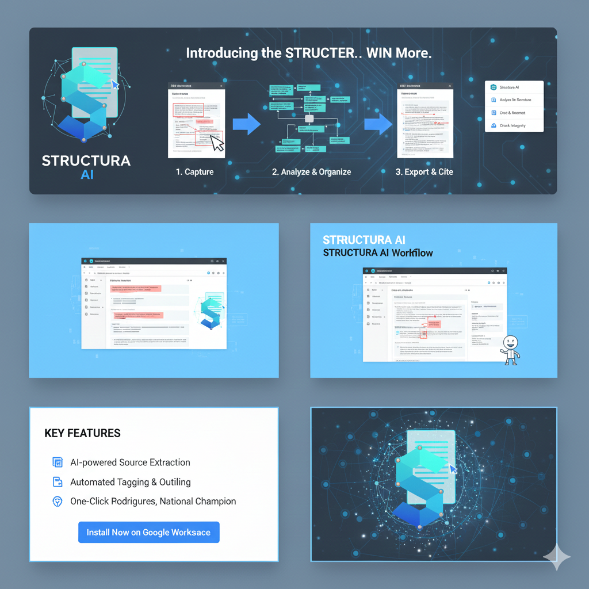

Document & Prep Tools Sidebar
This sidebar provides a comprehensive set of tools for preparing, analyzing, and formatting your Google Docs, especially useful for debate research and structured document creation. It leverages AI for various tasks and offers extensive utility functions.
AI Index Creator
Utilizes AI to process selected text for either summarizing or indexing purposes.
- Generate Index Entry (JSON): Summarizes selected text into a JSON object, suitable for detailed indexing.
- Generate Quick Summary Tag: Creates a concise, single-sentence summary tag from selected text.
Heading Utilities
Tools for efficient management and formatting of document headings.
- Select All Headings: Selects all paragraphs currently formatted as any heading level (H1-H6).
- Promote All: Promotes the heading level of selected headings (e.g., H3 to H2), stopping at H1.
- Demote All: Demotes the heading level of selected headings (e.g., H1 to H2), stopping at Normal text for H6.
- Select Headings by Level: Selects all paragraphs formatted as a specific heading level chosen from a dropdown.
Document Utilities
Functions to clean, format, and prepare your document content.
- Format Stripper: Removes all custom formatting (bold, italic, font size, color, links, etc.) from selected text.
- Break & Merge Cleaner: Merges selected paragraphs and list items into a single paragraph, preserving character formatting.
- Generate Missing Citations: Scans the document and uses AI to generate missing author-year citations for content blocks that lack them.
- Emphasize Highlighted: Formats highlighted text (text with a background color) as bold and red (emphasis color).
- Shrink Non-Emphasized Text: Reduces the font size of text that is not bold or emphasized within selected text or the entire document.
- Run Link Checker: Scans the document for hyperlinks, verifies their status, and highlights broken links in red.
- Tag Organizer: Finds short, normal-text paragraphs, formats them as Heading 6 (bold, underlined), and specifically formats "C" followed by a number (e.g., C1, C2) as Heading 2 (bold, underlined).
- Make Document Tournament Ready: An orchestration tool that:
- Runs the Link Checker.
- Emphasizes all highlighted text.
- Shrinks non-emphasized text to 8pt font.
Debate Citation Block Creator
An AI-powered tool to automatically fetch information from a URL, generate a formatted citation, and insert it into your document at the cursor.
- URL to Cite: Input field for the web address of the source.
- Optional Initials: Input field for user initials to be appended to the citation; these initials are saved for future use.
- Insert Citation Button: Triggers the AI to fetch, analyze, format, and insert the citation.
Custom Outline Creator
Generates a clickable outline of your document based on selected heading levels.
- Heading Levels (e.g., 1, 2, 4): Specify which heading levels to include in the outline.
- Generate Outline: Creates a dynamic, clickable list of headings in the sidebar.
Advanced Card Condenser
Condenses content blocks between a specified start marker and an end heading style.
- Start Marker: Text string indicating the beginning of the content block (e.g., "//TNW").
- End Heading Style: The heading level that marks the end of the content block (e.g., HEADING2).
- Condense Card: Processes and condenses the identified card content.
Custom Tag
Inserts a custom text tag with a specified heading style into the document.
- Tag Text: The content for your custom tag.
- Heading Style: The heading level to apply to the tag (e.g., HEADING6).
- Insert Tag: Inserts the custom tag into the document.
Custom Tag Outline
Generates a clickable outline specifically for Heading 6 tags found in the document.
- Generate Tag Outline (H6): Creates a dynamic, clickable list of all H6 tags.
Card Structure Condenser
Merges and cleans evidence blocks between a citation and a tag based on predefined rules. This tool does not use AI for its core condensation logic.
- Tag Heading Style: The heading level of the tag that marks the end of the evidence block.
- Condense Card Structure: Initiates the merging and cleaning process.
Briefing Creator
Scans the document for highlighted text and author-year citations, then appends them to the document to create a briefing summary.
- Tag Heading Style: The heading level to apply to generated tags in the briefing.
- Tag Font: The font family to use for generated tags.
- Generate Briefing: Creates the briefing document.